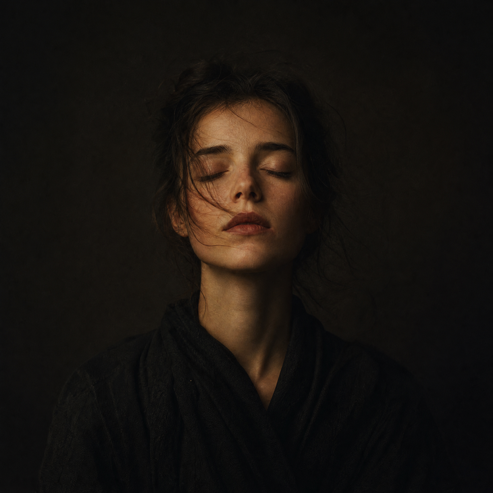
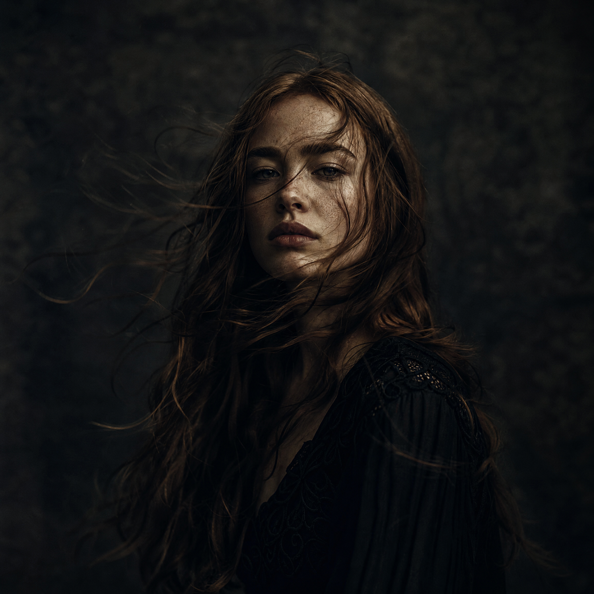
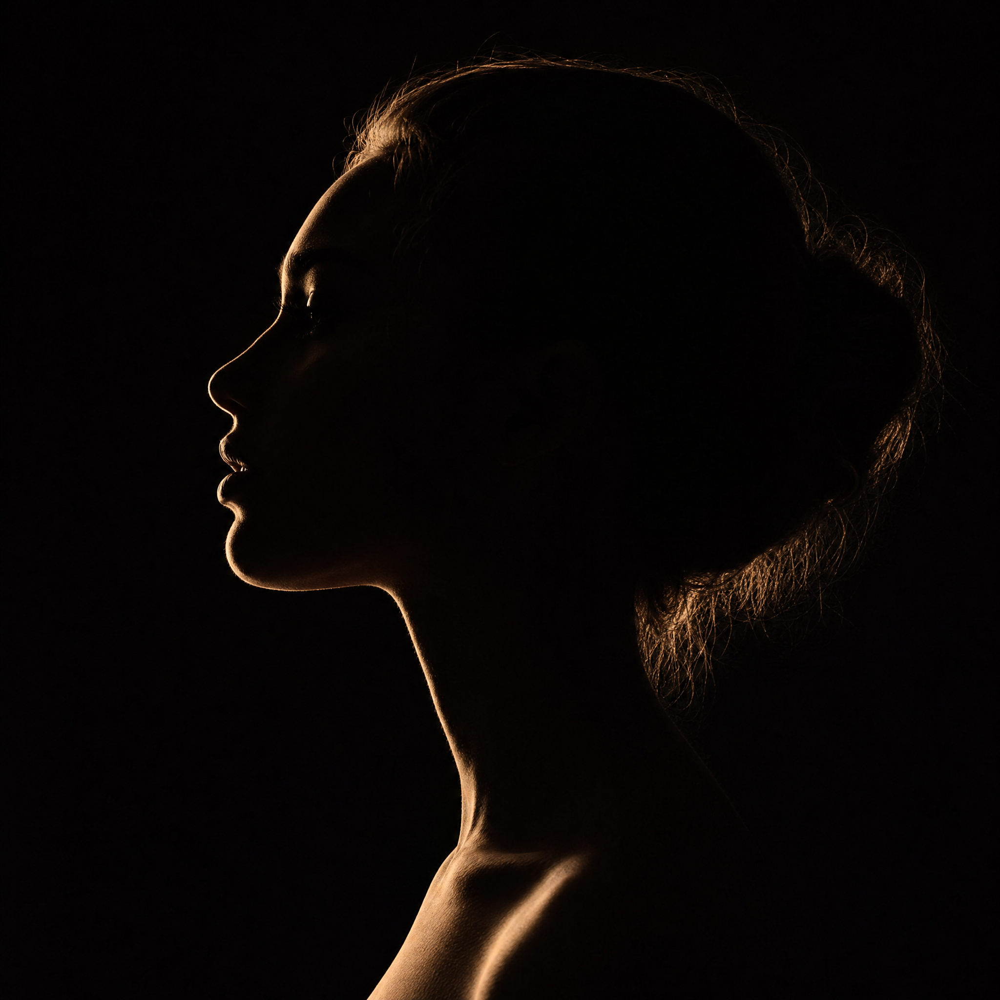
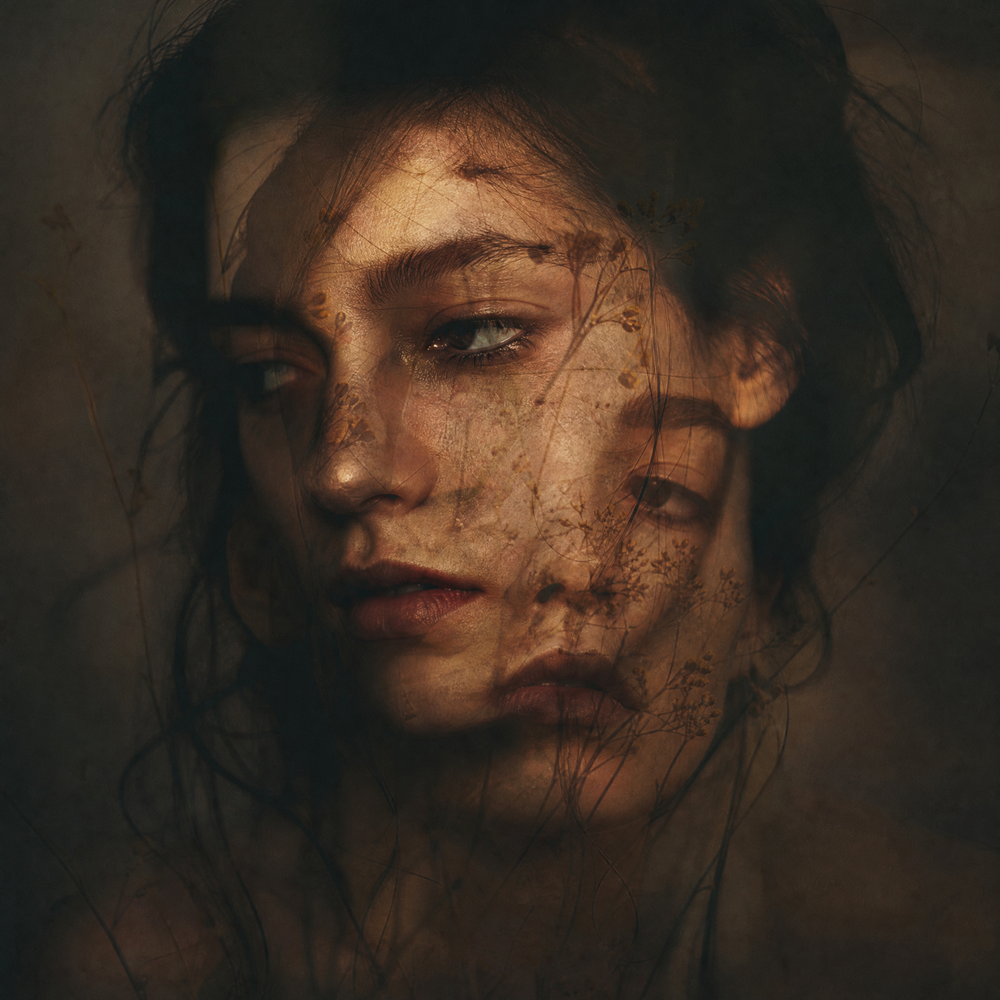

Portfolio · 2026
Fine art & editorial photographer. Capturing the raw, the real, the unforgettable.
01 — About
I'm a fine art and editorial photographer based in Berlin. My work explores the intersection of vulnerability and strength — every portrait tells a story that words cannot.
Published in Vogue Italia, Dazed, AnOther Magazine. Exhibited at Fotografiska Stockholm, C/O Berlin.
12
Years
200+
Editorials
8
Exhibitions

02 — Work
Selected works
2020 — 2026


03 — Philosophy
My approach is rooted in patience and presence. I wait for the mask to drop, for the real person to emerge. The camera is just a witness.
I shoot exclusively on medium format digital, with natural and practical lighting. No retouching of skin texture — ever.
04 — FAQ
Initial consultation → mood board → shoot day → selects within 48h → final edits in 2 weeks.
Yes. I'm based in Berlin but work globally. Travel fees are quoted separately.
Minimal. True-to-skin color grading with a slight film-inspired tone. No heavy retouching.
Editorial starts at €2,000/day. Commercial is project-based — reach out for a custom quote.

05 — Testimonials
"Jessi captured something I didn't know existed in me. The images are haunting, beautiful, and completely authentic."
— Creative Director, Dazed Magazine
"Working with Jessi is like therapy. She creates a space where you can be completely vulnerable, and the results are extraordinary."
— Actor, Berlinale Feature Film
06 — Contact
Email: studio@jessijons.com
Studio: Berlin-Kreuzberg, Germany
Instagram: @jessijons
leishifu-dark-photographer · v1.0 · 2026